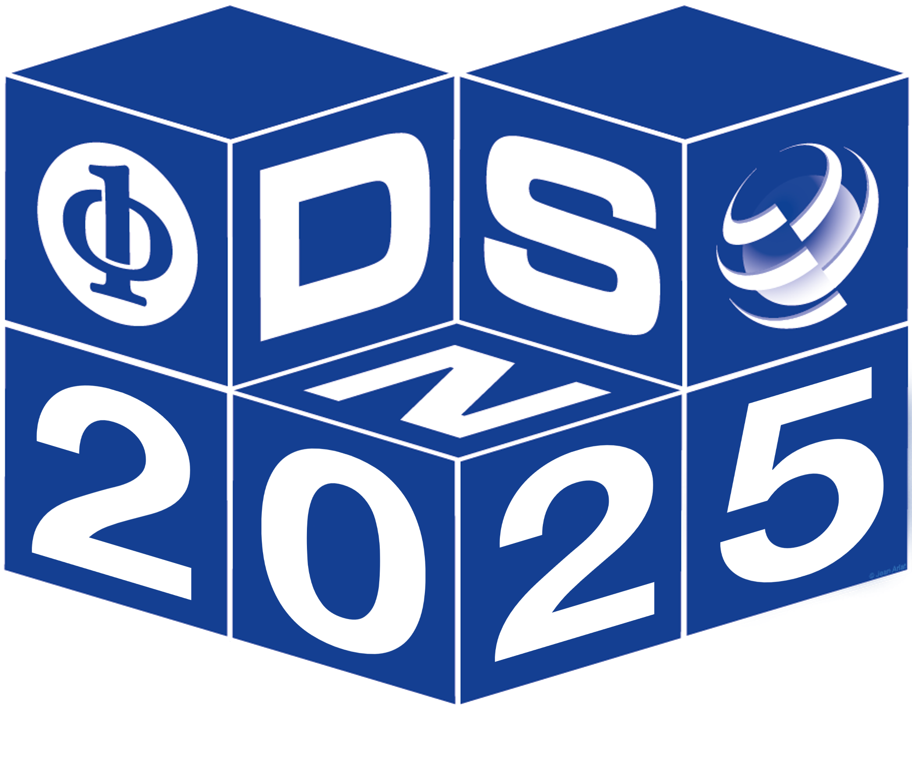

DSML 2025
June 23, 2025 |
 |
|
Machine learning (ML) is increasingly used in critical domains such as healthcare, criminal sentencing recommendations, commerce, transportation, entertainment, space technology, and communication. The design of traditional ML systems has mainly focused on developing models, algorithms, and datasets on which they are trained to demonstrate high accuracy for specific tasks such as object recognition and classification. Recent advances, such as Generative AI, have expanded ML capabilities to include generating realistic content like text, images, and videos, enabling new applications in creative industries, education, and personalized healthcare. ML algorithms typically construct a model by training on a labeled training dataset, and their performance is assessed based on the accuracy in predicting labels for unseen (but often similar) testing data. This is based on the assumption that the training dataset is representative of the inputs that the system will face in deployment. However, in practice, there are many unexpected accidental and adversarially-crafted perturbations on the ML inputs that might lead to violations of this assumption. Generative AI, while powerful, introduces new risks, such as the generation of highly convincing adversarial inputs or misinformation, which can mislead the system decision during training or evaluation and undermine the overall reliability and safety. Moreover, ML algorithms are also often over-confident about their predictions when processing anomalous or unexpected inputs. This makes it difficult to deploy them in safety-critical settings where one needs to rely on ML predictions to make decisions or revert to a failsafe mode. Further, ML algorithms are often executed on special-purpose hardware accelerators, which could be subject to faults and attacks. Thus, there is a growing concern regarding the reliability, safety, security & privacy, and accountability of ML-assisted systems. The DSML workshop is an open forum for researchers, practitioners, and regulatory experts, to present and discuss innovative ideas and practical techniques and tools for producing dependable and secure ML systems. A major goal of the workshop is to draw the attention of the research community to the problem of establishing guarantees of reliability, security, safety, and robustness for systems that incorporate increasingly complex machine learning models, and to the challenge of determining whether such systems comply with the requirements set by regulations, and standards for safety-critical systems. A further goal is to build a research community at the intersection of ML systems and dependable and secure computing. |